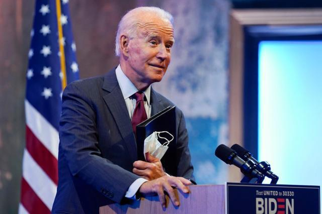

据《纽约邮报》报道，美国特拉华州立大学（DSU）否认乔·拜登曾在该校就读，此前这位美国总统候选人声称，他是在这所历史知名的黑人大学“起步的”。

视频显示，在去年10月南卡罗来纳州民主党初选之前的一次市政厅活动中，这位77岁的民主党人（拜登）对传统的黑人学院和大学大加赞赏，并发表了上述言论。
拜登对佛罗伦斯威尔逊高中的学生们说:“我是从特拉华州的一所传统黑人学院起步的。现在，我不想听到任何关于特拉华州的负面消息。他们是我的家人。”威尔逊高中是美国政府被解放黑奴事务管理局在1866年为寻求教育机会的黑人儿童创办的。
然而，拜登的言论后来让他备受困扰，因为该校表示，拜登在从政几十年后才去过该校参加一次毕业典礼并发表演讲。